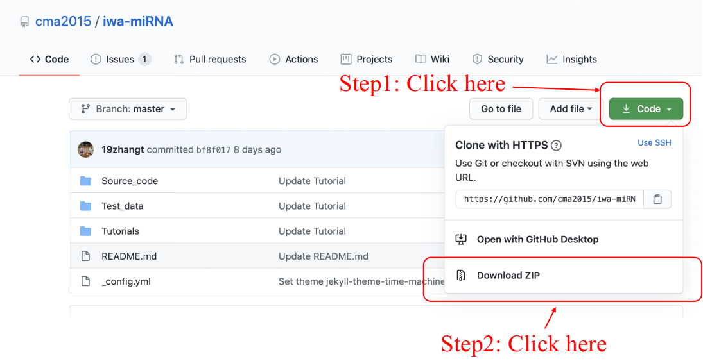
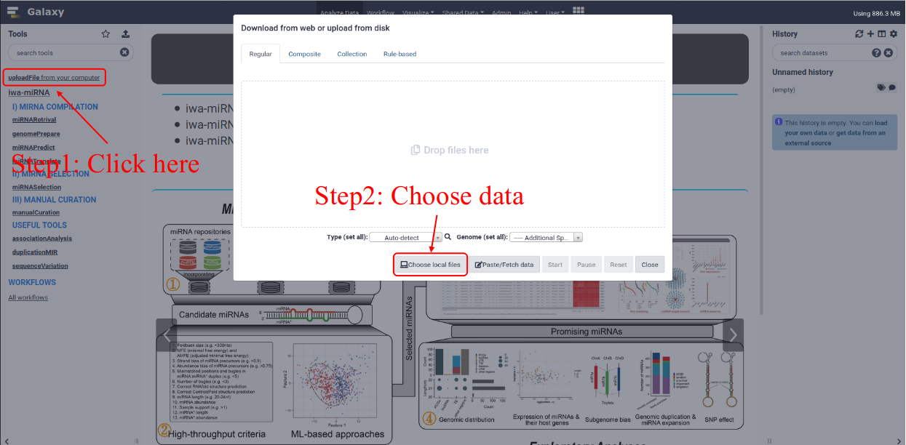
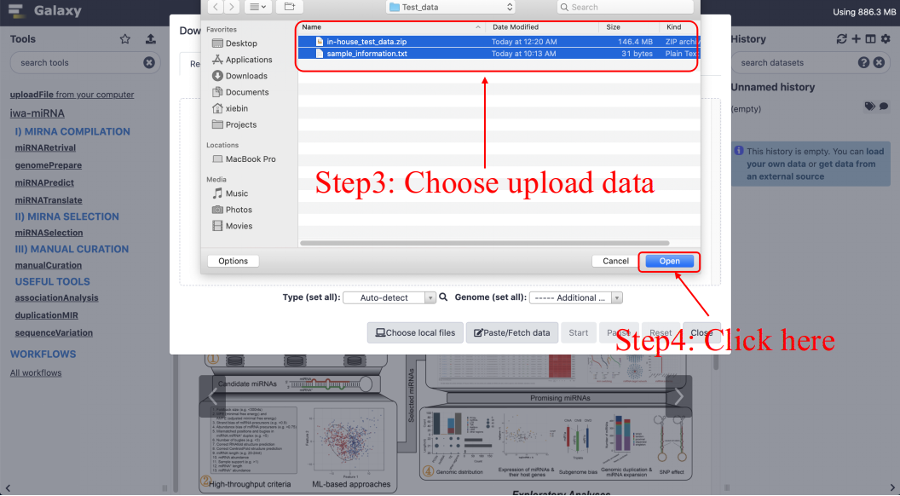
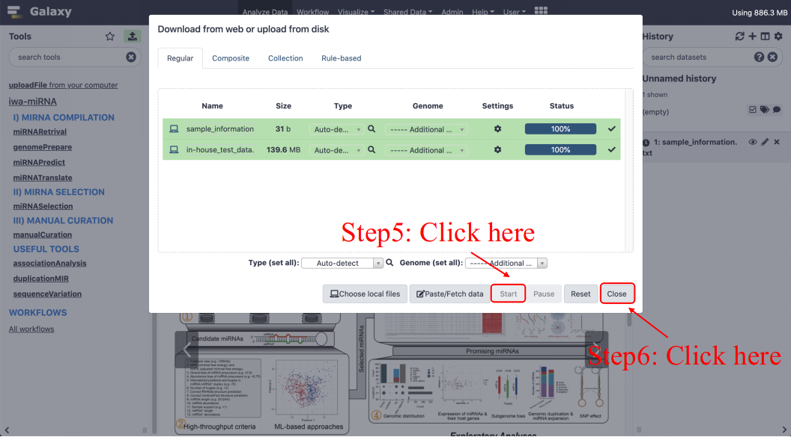
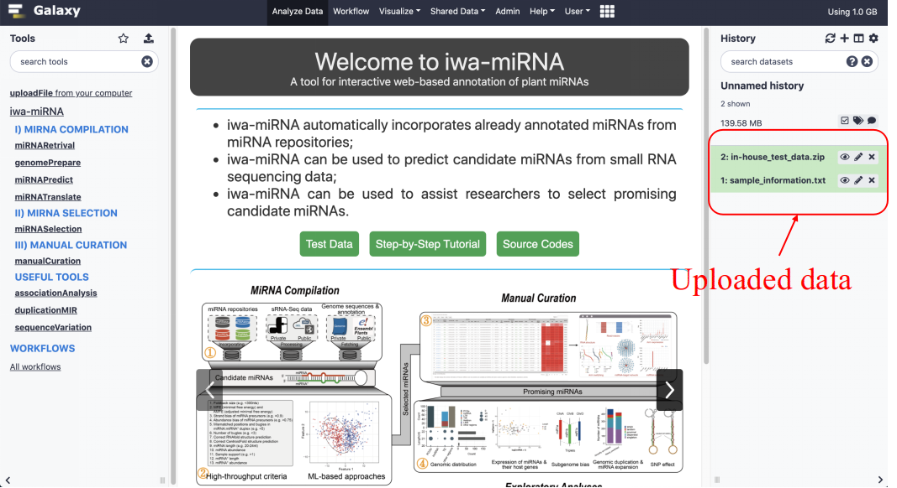

Upload data to your local iwa-miRNA server¶
Download test data¶
Test data for iwa-miRNA are both available at GitHub and Web server.
For GitHub, click “Clone” (see the figure below), and then download the ZIP compressed file into your local device, and then unzip the file.
For Web server, click the link (see the figure below), and then save the file into your local device, and then unzip the file.

Data descriptions¶
A brief description of test data files:
sRNA-Seq_test_data.zip
This file contains raw sequencing reads in FASTQ format, which can be uploaded to iwa-miRNA server and used as inputs of miRNAPredict module. In detail, two Arabidopsis sRNA-Seq data (SRR11347201 and SRR11829907) were selected, and the first 10 million rows were packaged and named as test1.fastq.gz and test2.fastq.gz.
sample_information.txt
This file contains the tissue name of corresponding samples involved in sRNA-Seq_test_data. It has two columns with tab-delimited format. The first column is sample names, and the second column is tissue names.
gene_description.txt
This file contains genes descriptions and is used as input of manualCuration function. It has two columns with tab-delimited format. The first column is the gene names and the second column is the gene description. Gene descriptions were extracted from Arabidopsis GFF3 annotation file.
genome_annotation.txt
This file contains gene function annotation information, which can be uploaded to iwa-miRNA server and used as inputs of the manualCuration and associationAnalysis modules. It has seven columns with tab-delimited format, which represent chromosomes, start sites, end sites, ID, strand, gene types, and detailed types. These gene attributes were extracted from Arabidopsis GFF3 annotation file. TEs (Transposed elements) were downloaded from TAIR10_Transposable_Elements.
SNPs_in_Arabidopsis.txt
This file contains part of SNPs from The 1001 Genomes Project and is used as input of the sequenceVariation function. It has five columns with tab-delimited format, representing chromosomes, start sites, ID, reference, and alternative alleles, respectively. This information can be downloaded from Ensembl Plants Variations.
Upload test data to your local iwa-miRNA server¶
User can upload data using uploadFile tool (see the figure below) in the Galaxy interface.
